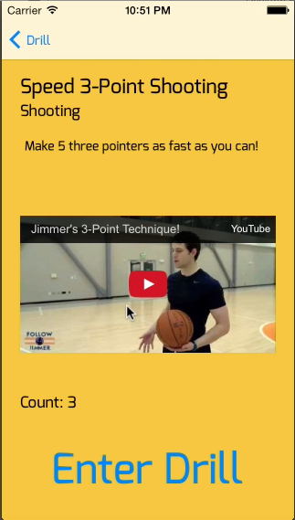
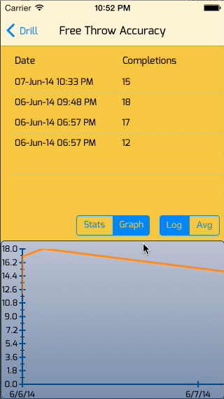

BALLSOHARD


Format: iOS
Redesigning the Basketball Workout
Read More
BallSoHard was developed for the iPhone to revolutionize how Basketball players craft and perfect their game. Created for the Stanford Class CS193P, BallSoHard uses objective statistics and analytics to push a players skills. Users can use the app to create drills and workouts, do drills or workouts and track their progress and improvement.